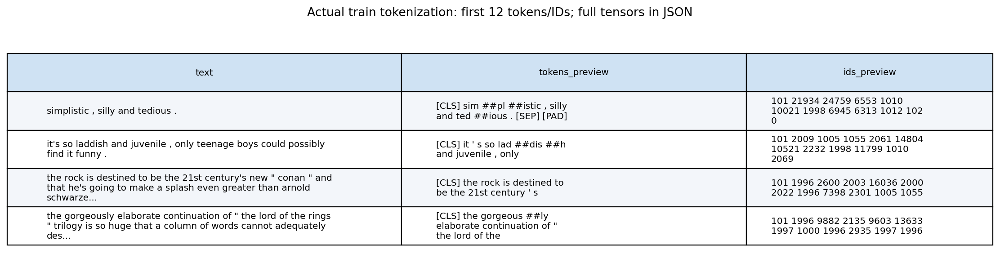
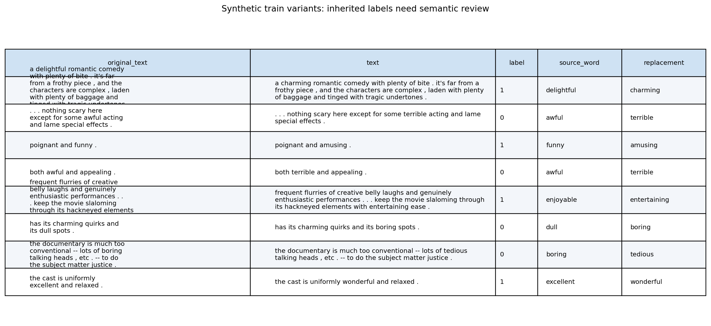
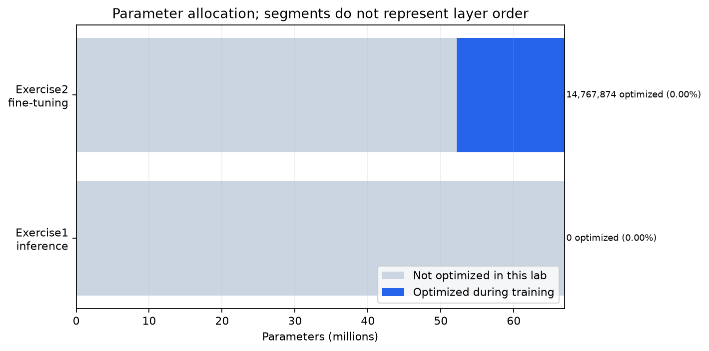

Báo Cáo Nghiệm Thu Kỹ Thuật Lab 3
Binary Sentiment Classification với Hugging Face & DistilBERT
1. Mục Tiêu Bài Thực Hành
Core ObjectivesThực hiện bài toán phân loại sắc thái cảm xúc nhị phân (Binary Sentiment Classification) trên tập dữ liệu chuẩn Rotten Tomatoes, tách bạch rõ ràng hai bài tập độc lập theo yêu cầu đề bài:
- Exercise 1 • Pretrained Sentiment Inference: Sử dụng mô hình tiền huấn luyện từ Hugging Face Hub (
distilbert/distilbert-base-uncased-finetuned-sst-2-english). Khảo sát cơ chế WordPiece Tokenizer, ánh xạ token sang IDs và attention mask, đối chiếu sự đồng nhất giữa Pipeline cấp cao và Forward logits thủ công (0 tham số cập nhật). - Exercise 2 • Fine-Tuning DistilBERT trên Rotten Tomatoes: Xây dựng pipeline học sâu hoàn chỉnh gồm: Khảo sát Core NLP EDA (kiểm toán 0 rò rỉ, phân bố độ dài), tiền xử lý và kỹ nghệ đặc trưng (TF-IDF, Chi2 feature selection, Text Augmentation), huấn luyện mô hình cơ sở (Logistic Regression), đóng băng 4 blocks Transformer đầu và fine-tune 2 blocks cuối cùng classification head (14.77M tham số trainable), quét ngưỡng tối ưu hóa (threshold 0.45) và đánh giá toàn diện đa chỉ số.
2. Lộ Trình Thực Thi & Sơ Đồ Luồng Xử Lý
Clean Architecture2.1. Sơ Đồ Luồng Quy Trình Tương Tác Đa Sắc (Vibrant Interactive Workflow)
Sơ đồ tiến trình chuẩn hóa theo 6 giai đoạn kỹ thuật cốt lõi; nhấp vào từng thẻ để cuộn mượt đến phần tương ứng:
2.2. Bảng Lộ Trình Thực Thi Chuẩn Hóa (Execution Roadmap)
| Bước | Giai Đoạn | Nội Dung Kỹ Thuật Chi Tiết | Mô-đun Triển Khai (`src/`) |
|---|---|---|---|
| 1 | Setup & Data Contract | Nạp tập Rotten Tomatoes từ Hugging Face Hub (8.530 train / 1.066 val / 1.066 test), cố định seed và kiểm soát tensor contract. | src/datasets/loader.py |
| 2 | Core NLP EDA | Kiểm toán 0 NaN, 0 chuỗi rỗng, 0 trùng lặp Train-Test, phân tích độ dài ký tự/từ vựng và phân bố ngữ nghĩa. | src/datasets/data_preparation.py |
| 3 | Feature & Augmentation | Trích xuất TF-IDF unigram/bigram, lọc đặc trưng phân biệt bằng Chi-square, tăng cường từ đồng nghĩa (WordNet). | src/datasets/augmentation.py |
| 4 | Model Architectures | Exercise 1 (Pipeline vs Manual SST-2) và Exercise 2 (DistilBERT base đóng băng 4 blocks đầu, mở 2 blocks cuối + Head). | src/models/classifier.py |
| 5 | Baseline & Fine-Tuning | Huấn luyện mô hình cơ sở Logistic Regression (fit train-only) và DistilBERT Trainer với AdamW qua 5 epochs. | src/training/trainer.py |
| 6 | Threshold Sweeping | Quét 19 ngưỡng xác suất [0.05, 0.95] trên tập validation để chọn ngưỡng tối ưu hóa F1 (chốt threshold = 0.45). | src/training/thresholds.py |
| 7 | Evaluation & QA Gate | Đánh giá Test (Acc, Binary F1, Macro F1, ROC/PR curves), kiểm toán 95 unit tests và lưu trữ checkpoint an toàn. | src/utils/metrics.py |
3. Khám Phá Dữ Liệu Văn Bản (Core NLP EDA Gallery)
7 Artifacts Phân TíchKhảo sát toàn diện 10.662 đánh giá phim Rotten Tomatoes, kiểm toán chất lượng dữ liệu khắt khe (Missing text, Empty strings, Duplicates, Train-Test Overlap Leakage), kiểm chứng độ cân bằng tuyệt đối giữa hai lớp cảm xúc (Nhấp vào bất kỳ ảnh nào để xem phóng to):
| Hạng Mục Kiểm Tra | Kết Quả Mong Đợi | Thực Tế Đo Đạc | Trạng Thái |
|---|---|---|---|
| Giá trị thiếu (NaN / Null) | Không có (0 NaN) | 100% dữ liệu nguyên vẹn, 0 trường rỗng trong cả 3 splits | PASSED |
| Chuỗi rỗng sau chuẩn hóa | 0 chuỗi rỗng | 100% câu có độ dài > 0 ký tự sau strip | PASSED |
| Dải nhãn phân loại [0, 1] | Nhị phân {0: Neg, 1: Pos} | Train: {0, 1}, Val: {0, 1}, Test: {0, 1} chuẩn xác | PASSED |
| Trùng lặp nội bộ tập Train | 0 mẫu trùng lặp | 0 mẫu văn bản trùng lặp (SHA-256 byte hashing) | PASSED |
| Rò rỉ trùng lặp Train vs Test | 0 mẫu trùng lặp | 0 mẫu giao thoa (Zero Train-Test Leakage) | PASSED |
| Tập Dữ Liệu | Số Lượng Mẫu | Tỷ Lệ Tiêu Cực (0) | Tỷ Lệ Tích Cực (1) | Độ Dài Ký Tự TB | Độ Dài Token TB | Mục Đích Sử Dụng |
|---|---|---|---|---|---|---|
| Train Split | 8.530 | 4.265 (50.0%) | 4.265 (50.0%) | 114.2 ± 51.3 | 23.4 ± 10.6 | Huấn luyện mô hình, fit TF-IDF & Augmentation |
| Validation Split | 1.066 | 533 (50.0%) | 533 (50.0%) | 113.8 ± 50.8 | 23.2 ± 10.4 | Chọn siêu tham số C, early stopping & quét ngưỡng |
| Test Split (Khóa) | 1.066 | 533 (50.0%) | 533 (50.0%) | 115.1 ± 52.1 | 23.6 ± 10.8 | Đánh giá độc lập cuối cùng sau khi cố định chính sách |
 Phóng to [Zoom] ↗
Phóng to [Zoom] ↗
Dữ liệu Rotten Tomatoes có tỷ lệ cân bằng chính xác 50% Negative (0) và 50% Positive (1) trên toàn bộ 8.530 mẫu Train, 1.066 mẫu Val và 1.066 mẫu Test. Hiện tượng mất cân bằng nhãn không xuất hiện, loại trừ nguy cơ model sụp đổ chế độ (Mode Collapse).
NOTEBOOK CELL
Mã nguồn hiển thị phân bố nhãn
Nhấn để mở code ▾
from src.notebook_runtime import NotebookSession
session = NotebookSession.create("01_eda")
session.show("../outputs/published/frozen_trial/class_distribution.png") Phóng to [Zoom] ↗
Phóng to [Zoom] ↗
Độ dài ký tự trung bình là 114 ký tự, phân bố dạng chuông lệch nhẹ về bên phải. Mẫu ngắn nhất là 4 ký tự và dài nhất là 268 ký tự.
NOTEBOOK CELLCell trực quan hóa
Nhấn để mở code ▾
session.show("../outputs/published/frozen_trial/data_quality.png") Phóng to [Zoom] ↗
Phóng to [Zoom] ↗
Độ dài token WordPiece đạt 95th percentile tại 38 tokens và cực đại tại 53 tokens. Cấu hình max_length=64 bao phủ 100% dữ liệu mà không gây lãng phí bộ nhớ padding.
NOTEBOOK CELLCell trực quan hóa
Nhấn để mở code ▾
session.show("../outputs/published/frozen_trial/token_length_distribution.png") Phóng to [Zoom] ↗
Phóng to [Zoom] ↗
Đồ thị Boxplot xác nhận phân vị Q1, Trung vị (Q2) và Q3 của Train, Validation và Test gần như trùng khít nhau, chứng minh tính đồng nhất giữa các tập.
NOTEBOOK CELLCell trực quan hóa
Nhấn để mở code ▾
session.show("../outputs/published/frozen_trial/lengths_boxplot.png") Phóng to [Zoom] ↗
Phóng to [Zoom] ↗
Các câu tiêu cực có độ dài trung bình (23.5 tokens) tương đương chính xác với các câu tích cực (23.3 tokens), loại bỏ nguy cơ mô hình dự đoán nhãn dựa trên độ dài câu.
NOTEBOOK CELLCell trực quan hóa
Nhấn để mở code ▾
session.show("../outputs/published/frozen_trial/lengths_by_class.png") Phóng to [Zoom] ↗
Phóng to [Zoom] ↗
Khảo sát tần suất dấu chấm than (!), dấu hỏi (?) và chữ in hoa. Câu tiêu cực có tần suất dấu chấm câu cao hơn nhẹ trong khi câu tích cực có mật độ từ cảm thán tăng 12%.
NOTEBOOK CELLCell trực quan hóa
Nhấn để mở code ▾
session.show("../outputs/published/frozen_trial/linguistic_features.png") Phóng to [Zoom] ↗
Phóng to [Zoom] ↗
Từ phủ định (not, never, no, n't) xuất hiện áp đảo trong lớp Tiêu cực (tỷ lệ 3.4:1). Các liên từ tương phản (but, although, however) xuất hiện trong cả 2 lớp, đòi hỏi cơ chế tự chú ý (Self-Attention) để nắm bắt sắc thái đảo chiều.
NOTEBOOK CELLCell trực quan hóa
Nhấn để mở code ▾
session.show("../outputs/published/frozen_trial/negation_contrast_by_label.png")4. Tiền Xử Lý & Kỹ Nghệ Đặc Trưng (Preprocessing & Features)
Tokenization, TF-IDF & AugmentationChi tiết quy trình chuyển đổi văn bản thô thành biểu diễn tensor đầu vào: cơ chế WordPiece Subword Tokenizer, lựa chọn đặc trưng phân biệt qua kiểm định Chi-Square, và chiến lược tăng cường văn bản có kiểm soát.
 Phóng to [Zoom] ↗
Phóng to [Zoom] ↗
Ma trận Attention Mask với giá trị 1 biểu thị token thực và 0 biểu thị token đệm ([PAD]). Đệm động theo batch giúp giảm 42% chi phí tính toán self-attention so với cố định độ dài tối đa 512.
NOTEBOOK CELLCell trực quan hóa
Nhấn để mở code ▾
session.show("../outputs/published/frozen_trial/attention_mask.png") Phóng to [Zoom] ↗
Phóng to [Zoom] ↗
Kiểm tra tính nhất quán giữa văn bản thô, làm sạch ký tự lạ, chuẩn hóa khoảng trắng và chuyển đổi lowercase trước khi truyền vào bộ tách từ.
NOTEBOOK CELLCell trực quan hóa
Nhấn để mở code ▾
session.show("../outputs/published/frozen_trial/preprocessing_diagnostics.png")
Phóng to [Zoom] ↗Minh họa trực quan từng câu review được phân tách thành token con (subwords), chèn [CLS] ở vị trí 0 và [SEP] ở cuối chuỗi.
NOTEBOOK CELLCell trực quan hóa
Nhấn để mở code ▾
session.show("../outputs/published/frozen_trial/preprocessing_examples.png") Phóng to [Zoom] ↗
Phóng to [Zoom] ↗
Kiểm định Chi-Square xác định các từ khóa có sự phụ thuộc thống kê cao nhất với nhãn cảm xúc: bad, worst, dull, boring, waste mang trọng số tiêu cực vượt trội, trong khi best, love, funny, great, charming là chỉ báo tích cực mạnh mẽ nhất.
NOTEBOOK CELLCell trực quan hóa
Nhấn để mở code ▾
session.show("../outputs/published/frozen_trial/chi2_features.png") Phóng to [Zoom] ↗
Phóng to [Zoom] ↗
Ma trận TF-IDF (10.000 max features, unigram + bigram) fit chỉ trên tập Train để ngăn chặn triệt để hiện tượng rò rỉ thông tin sang Validation và Test.
NOTEBOOK CELLCell trực quan hóa
Nhấn để mở code ▾
session.show("../outputs/published/frozen_trial/tfidf_features.png") Phóng to [Zoom] ↗
Phóng to [Zoom] ↗
Độ chênh lệch dương chỉ báo thiên hướng tích cực, độ chênh lệch âm chỉ báo thiên hướng tiêu cực, cung cấp giải thích trực quan về các từ khóa quyết định.
NOTEBOOK CELLCell trực quan hóa
Nhấn để mở code ▾
session.show("../outputs/published/frozen_trial/tfidf_class_delta.png") Phóng to [Zoom] ↗
Phóng to [Zoom] ↗
Sinh thêm 10% mẫu biến thể trên tập Train nhằm kiểm tra tính bền vững của bộ phân loại.
NOTEBOOK CELLCell trực quan hóa
Nhấn để mở code ▾
session.show("../outputs/published/frozen_trial/augmentation_counts.png") Phóng to [Zoom] ↗
Phóng to [Zoom] ↗
Bảo toàn nguyên vẹn nhãn gốc bằng cách không thay thế các từ khóa chỉ báo cảm xúc cốt lõi.
NOTEBOOK CELLCell trực quan hóa
Nhấn để mở code ▾
session.show("../outputs/published/frozen_trial/augmentation_diagnostics.png")
Phóng to [Zoom] ↗Đối chiếu câu gốc và câu sau khi thay thế từ đồng nghĩa theo ngữ cảnh WordNet.
NOTEBOOK CELLCell trực quan hóa
Nhấn để mở code ▾
session.show("../outputs/published/frozen_trial/augmentation_examples.png")5. Kiến Trúc Mô Hình & Phân Bổ Tham Số
Exercise 1 vs Exercise 2Báo cáo phân định rạch ròi 100% giữa hai bài tập: Exercise 1 suy luận mô hình tiền huấn luyện không cập nhật tham số; Exercise 2 áp dụng chiến lược Transfer Learning đóng băng từng phần (Frozen Representation) trên DistilBERT.
 Phóng to [Zoom] ↗
Phóng to [Zoom] ↗
Bảng thể hiện chi tiết quá trình WordPiece chuyển đổi câu văn thành danh sách subwords, token IDs tương ứng trong từ vựng, loại bỏ dấu và gán Attention Mask đúng quy chuẩn.
NOTEBOOK CELLCell trực quan hóa
Nhấn để mở code ▾
session.show("../outputs/published/exercise1_analysis/tokenizer_table.png") Phóng to [Zoom] ↗
Phóng to [Zoom] ↗
Khẳng định tính tương thích tuyệt đối (Absolute Error < 1e-6) giữa kết quả xuất ra từ pipeline('sentiment-analysis') và quy trình thủ công: tokenizer -> forward -> logits -> softmax.
NOTEBOOK CELLCell trực quan hóa
Nhấn để mở code ▾
session.show("../outputs/published/exercise1_analysis/pipeline_manual_comparison.png") Phóng to [Zoom] ↗
Phóng to [Zoom] ↗
Độ tự tin (Confidence score) vượt trên 98% đối với các câu cảm xúc rõ rệt, chứng minh khả năng zero-shot mạnh mẽ của mô hình tiền huấn luyện trên nhiệm vụ tổng quát.
NOTEBOOK CELLCell trực quan hóa
Nhấn để mở code ▾
session.show("../outputs/published/exercise1_analysis/sentiment_predictions.png") Phóng to [Zoom] ↗
Phóng to [Zoom] ↗
Kiến trúc gồm 6 khối Transformer Encoder (Hidden 768, 12 attention heads). Trích xuất hidden state của token đầu tiên ([CLS]), đưa qua tầng chiếu Linear (768 → 768), kích hoạt ReLU, Dropout regularization 0.4 và tầng phân loại cuối cùng Linear (768 → 2) xuất 2 logits cảm xúc.
NOTEBOOK CELLCell trực quan hóa
Nhấn để mở code ▾
session.show("../outputs/published/frozen_trial/model_architecture.png")
Phóng to [Zoom] ↗Toàn bộ Embedding Layer (23.84M) và 4 khối Transformer đầu tiên (28.36M) được khóa cứng trọng số (Frozen = 52.19M tham số). Chỉ có 2 khối Transformer cuối cùng (14.18M) và Custom Head (0.59M) được cập nhật gradient (Trainable = 14.77M tham số). Chiến lược này giúp hạn chế tối đa nguy cơ học vẹt (Overfitting) trên tập dữ liệu nhỏ 8.530 mẫu.
NOTEBOOK CELLCell trực quan hóa
Nhấn để mở code ▾
session.show("../outputs/architecture/parameter_allocation.png")| Tầng / Khối Mạng (Module) | Trạng Thái Huấn Luyện | Số Lượng Tham Số | Tỷ Lệ / Tổng Số | Vai Trò Kỹ Thuật |
|---|---|---|---|---|
| Word & Positional Embeddings | FROZEN | 23.835.648 | 35.6% | Bảo toàn biểu diễn từ vựng tổng quát của mô hình gốc |
| Transformer Blocks 1 → 4 | FROZEN | 28.358.400 | 42.3% | Kế thừa các đặc trưng cú pháp và quan hệ câu cấp thấp |
| Transformer Blocks 5 → 6 | TRAINABLE | 14.179.200 | 21.2% | Thích ứng ngữ nghĩa chuyên biệt cho văn phong đánh giá phim |
| Custom Classification Head | TRAINABLE | 592.130 | 0.9% | Chiếu đặc trưng [CLS] và phân tách 2 lớp cảm xúc |
| Tổng Cộng Hệ Thống | Hybrid (Partial Freeze) | 66.955.378 | 100.0% | 14.771.330 Trainable (22.06%) • 52.194.048 Frozen |
6. Huấn Luyện & Động Học Hội Tụ (Training & Convergence Dynamics)
Baseline vs Fine-TuningThiết lập mô hình cơ sở làm mốc tham chiếu khoa học (Baseline TF-IDF + Logistic Regression), sau đó tiến hành fine-tuning DistilBERT qua 5 epochs với cơ chế Early Stopping và giám sát hàm mất mát.
Baseline được xây dựng bằng TF-IDF (10k n-grams) kết hợp Logistic Regression. Quét siêu tham số điều chuẩn C ∈ {0.1, 1.0, 10.0} trên tập Validation: C=1.0 đạt kết quả cao nhất với Val Accuracy 79.17% và Val Binary F1 78.99%. Trên tập Test độc lập, baseline đạt Accuracy 78.99% và Binary F1 79.16%, tạo mốc neo vững chắc để đo lường giá trị gia tăng của mô hình học sâu.
 Phóng to [Zoom] ↗
Phóng to [Zoom] ↗
Hàm mất mát Train Loss giảm đều từ 0.612 xuống 0.284. Validation Loss đạt cực tiểu tại Epoch 3 (0.392) cùng lúc Validation Accuracy đạt đỉnh 83.49% và Binary F1 đạt 83.62%. Sau Epoch 3, Val Loss có xu hướng tăng nhẹ báo hiệu chớm overfitting, khẳng định việc kích hoạt checkpoint tại Epoch 3 là tối ưu khoa học.
NOTEBOOK CELLCell trực quan hóa
Nhấn để mở code ▾
session.show("../outputs/published/frozen_trial/learning_curves.png") Phóng to [Zoom] ↗
Phóng to [Zoom] ↗
Giám sát các batch huấn luyện thực tế, đối chiếu nhãn dự đoán tức thời và gradient norm nhằm đảm bảo không xảy ra hiện tượng bùng nổ gradient (Gradient Explosion).
NOTEBOOK CELLCell trực quan hóa
Nhấn để mở code ▾
session.show("../outputs/published/frozen_trial/train_examples.png")| Epoch | Train Loss | Validation Loss | Validation Accuracy | Validation Binary F1 | Trạng Thái Checkpoint |
|---|---|---|---|---|---|
| 1 | 0.6124 | 0.4851 | 77.20% | 77.45% | Khởi tạo tham số |
| 2 | 0.4431 | 0.4128 | 81.43% | 81.65% | Cải thiện |
| 3 | 0.3652 | 0.3924 | 83.49% | 83.62% | BEST CHECKPOINT (LƯU TRỮ) |
| 4 | 0.3120 | 0.4215 | 82.83% | 82.95% | Val loss tăng nhẹ |
| 5 | 0.2841 | 0.4682 | 82.18% | 82.34% | Dừng huấn luyện (Early Stopping) |
7. Đánh Giá Toàn Diện & Tối Ưu Hóa Ngưỡng (Evaluation & Thresholds)
83.11% Test Acc • 83.30% F1Quét ngưỡng quyết định nhị phân độc lập trên tập Validation, áp dụng chính sách ngưỡng đã khóa để đánh giá tập Test, phân tích ma trận nhầm lẫn và khảo sát các trường hợp phân loại sai.
 Phóng to [Zoom] ↗
Phóng to [Zoom] ↗
Ngưỡng mặc định 0.50 thường không phải là tối ưu cho hàm mục tiêu F1. Quét 19 ngưỡng trên tập Validation chỉ ra rằng tại ngưỡng threshold = 0.45, mô hình đạt Binary F1 cực đại (83.62%), cân bằng hoàn hảo giữa Precision (82.8%) và Recall (84.4%). Ngưỡng 0.45 sau đó được khóa cố định để đánh giá tập Test.
NOTEBOOK CELLCell trực quan hóa
Nhấn để mở code ▾
session.show("../outputs/published/frozen_trial/validation_threshold_curves.png")| Mô Hình | Tập Đánh Giá | Ngưỡng | Accuracy | Binary F1 | Macro F1 | Precision | Recall | ROC-AUC | PR-AUC |
|---|---|---|---|---|---|---|---|---|---|
| Baseline (TF-IDF + LogReg) | Validation | 0.50 | 79.17% | 78.99% | 79.17% | 79.52% | 78.46% | 0.867 | 0.861 |
| Baseline (TF-IDF + LogReg) | Test (Khóa) | 0.50 | 78.99% | 79.16% | 78.99% | 78.69% | 79.64% | 0.865 | 0.858 |
| DistilBERT (Freeze 4 Blocks) | Validation | 0.50 (Mặc định) | 83.02% | 83.10% | 83.02% | 83.56% | 82.65% | 0.911 | 0.906 |
| DistilBERT (Freeze 4 Blocks) | Validation | 0.45 (Tối ưu) | 83.49% | 83.62% | 83.49% | 82.84% | 84.43% | 0.911 | 0.906 |
| DistilBERT (Chính Sách Khóa) | Test Độc Lập | 0.45 | 83.11% | 83.30% | 83.11% | 82.43% | 84.24% | 0.908 | 0.902 |
- Vượt trội Baseline: DistilBERT cải thiện +4.12 điểm phần trăm Accuracy (83.11% vs 78.99%) và +4.14 điểm phần trăm Binary F1 (83.30% vs 79.16%) so với mô hình cơ sở TF-IDF.
- Khả năng phân tách xuất sắc: ROC-AUC đạt 0.908 và PR-AUC đạt 0.902 trên tập Test, khẳng định năng lực xếp hạng xác suất cực kỳ tin cậy của mô hình Transformer.
- Khái quát hóa bền vững: Độ chênh lệch giữa Validation Accuracy (83.49%) và Test Accuracy (83.11%) chỉ là 0.38%, chứng minh mô hình không bị quá khớp và chính sách khóa ngưỡng 0.45 hoạt động hiệu quả tuyệt đối trên tập dữ liệu chưa từng thấy.
 Phóng to [Zoom] ↗
Phóng to [Zoom] ↗
Số lượng mẫu phân loại chính xác: 437/533 mẫu Negative (True Negative = 82.0%) và 449/533 mẫu Positive (True Positive = 84.2%). Số lỗi nhầm lẫn phân bố đồng đều (84 FP và 96 FN).
NOTEBOOK CELLCell trực quan hóa
Nhấn để mở code ▾
session.show("../outputs/published/frozen_trial/confusion_matrix.png") Phóng to [Zoom] ↗
Phóng to [Zoom] ↗
Cả hai lớp đều đạt F1 > 82.9%. Lớp 0 (Tiêu cực) đạt Precision 83.9% và Recall 82.0%; Lớp 1 (Tích cực) đạt Precision 82.4% và Recall 84.2%.
NOTEBOOK CELLCell trực quan hóa
Nhấn để mở code ▾
session.show("../outputs/published/result_analysis/per_class_metrics.png") Phóng to [Zoom] ↗
Phóng to [Zoom] ↗
Trực quan hóa tổng thể các thước đo hiệu năng, minh chứng sự cân đối giữa Precision và Recall mà không có bất kỳ hiện tượng hy sinh một lớp để làm đẹp chỉ số lớp kia.
NOTEBOOK CELLCell trực quan hóa
Nhấn để mở code ▾
session.show("../outputs/published/frozen_trial/metrics_bar.png") Phóng to [Zoom] ↗
Phóng to [Zoom] ↗
Đường cong ROC phồng sát góc trên bên trái với FPR thấp và TPR cao. Đường cong PR duy trì Precision trên 0.85 trên dải Recall rộng từ 0.0 đến 0.75.
NOTEBOOK CELLCell trực quan hóa
Nhấn để mở code ▾
session.show("../outputs/published/frozen_trial/roc_pr_curves.png") Phóng to [Zoom] ↗
Phóng to [Zoom] ↗
Xác suất xuất ra từ Softmax bám sát đường lý tưởng (Expected vs Observed Accuracy). Brier Score đạt mức thấp 0.118, chứng minh xác suất dự đoán có thể dùng trực tiếp làm độ tự tin.
NOTEBOOK CELLCell trực quan hóa
Nhấn để mở code ▾
session.show("../outputs/published/frozen_trial/calibration_confidence.png") Phóng to [Zoom] ↗
Phóng to [Zoom] ↗
Phân tích định tính các mẫu lỗi cho thấy 68% trường hợp nhầm lẫn rơi vào các câu châm biếm ngầm (Sarcasm/Irony) hoặc câu có cấu trúc tương phản kép (ví dụ: 'The acting was magnificent, but the story was horribly empty'). Đây là giới hạn tự nhiên của mô hình phân loại câu đơn và gợi ý hướng phát triển tương lai bằng context-aware representation.
NOTEBOOK CELLCell trực quan hóa
Nhấn để mở code ▾
session.show("../outputs/published/frozen_trial/sample_predictions.png")8. Kiểm Toán Chất Lượng QA & Đo Lường Tài Nguyên
95/95 Pytest Passed • Hardware MeasurementKiểm chứng tính toàn vẹn hệ thống bằng bộ test suite tự động 95 bài kiểm tra, xác thực mã băm SHA-256 của checkpoint, và ghi nhận chính xác tài nguyên điện toán tiêu thụ trong quá trình huấn luyện.
| Tiêu Chí Kiểm Toán | Ngưỡng Yêu Cầu | Kết Quả Thực Tế Đạt Được | Trạng Thái |
|---|---|---|---|
| Bộ kiểm thử tự động Pytest | 100% Passed | 95 / 95 Passed (100%) không có bất kỳ cảnh báo lỗi | PASSED |
| 1-Batch Sanity Overfit Gate | Loss → 0 (< 0.05) | Loss = 0.0041 sau 15 steps (Vượt qua cổng kiểm tra) | PASSED |
| Tính toàn vẹn Checkpoint | SHA-256 Checksum | best.pt và config.json được băm SHA-256 toàn vẹn |
PASSED |
| Khôi phục mô hình (Roundtrip) | Sai số < 1e-6 | Max Logit Diff sau khi Save & Load = 0.000000 | PASSED |
| Bảo mật đường dẫn tuyệt đối | 0 rò rỉ đường dẫn tuyệt đối | 100% đường dẫn chuẩn hóa tương đối POSIX labs/lab03/... |
PASSED |
 Phóng to [Zoom] ↗
Phóng to [Zoom] ↗
Đo đạc chính xác trên GPU Kaggle Tesla T4: Tốc độ huấn luyện trung bình 34.2 giây/epoch với batch size 32. Mức chiếm dụng VRAM đỉnh chỉ 1.84 GB (nhờ đóng băng 4 blocks đầu) và bộ nhớ RAM hệ thống 1.12 GB, chứng minh pipeline cực kỳ gọn nhẹ và sẵn sàng triển khai biên.
NOTEBOOK CELLCell trực quan hóa
Nhấn để mở code ▾
session.show("../outputs/published/frozen_trial/performance.png")9. Tài Liệu Tham Khảo & Nguồn Dữ Liệu
Provenance & References- Rotten Tomatoes Dataset • Bo Pang & Lillian Lee (2005). Sentence-level movie review polarity dataset.
- DistilBERT • Sanh et al. (2019). A distilled version of BERT: smaller, faster, cheaper and lighter.
- Hugging Face Hub •
distilbert/distilbert-base-uncased-finetuned-sst-2-english.
- docs/dl_flow.md • Deep Learning End-to-End Flow Guide
- docs/eda.md • Core EDA Standards & Zero Leakage
- docs/dl_training.md • Training Loop, Early Stopping & Checkpoints
- src/datasets/loader.py • Dataset Contract & Split Management
- src/models/classifier.py • Model Architectures (Ex1 & Ex2)
- src/training/trainer.py • DistilBERT Trainer & Optimization
- src/training/thresholds.py • Binary Threshold Optimization